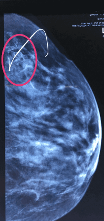

ఆంకోప్లాస్టిక్
Oncoplastic రొమ్ము సంరక్షణ శస్త్ర చికిత్స
రాధ (పేరు మార్చబడింది), 35 సంవత్సరాల మహిళ, రొమ్ము క్యాన్సర్కు రొమ్ము సంరక్షణ శస్త్రచికిత్స చేయించుకోవాలని సిఫారసు చేయబడింది. ఈ తరహా శస్త్రచికిత్స చేయించుకోవడం వల్ల, ఎందుకంటే పెద్దమొత్తంలో ఆమె రొమ్మును తొలగిస్తారు కనుక సౌందర్యపరంగా లోపం ఉండవచ్చని ఆమె భయపడుతోంది. రొమ్ము సంరక్షణ శస్త్రచికిత్స తరువాత తన రొమ్మలను రీషేప్ చేయించుకోవడానికి ఏదైనా సాంకేతికత ఉన్నదా అని ఆమె తెలుసుకోవాలని అనుకుంటున్నది.
రొమ్ము సంరక్షణ శస్త్రచికిత్స
-
దీనిలో విస్తృతంగా స్థానిక ప్రాంతం తొలగించడం జరుగుతుంది( దీనితో పరిసరాల్లో ఉండే చిన్నపాటి కణజాలంతోపాటుగా కణితి తొలగించబడుతుంది.)
రొమ్ము సంరక్షణ శస్త్రచికిత్స -
విస్తృతంగా స్థానిక ప్రాంతం తొలగింపు
 సౌజన్యం: బ్రెస్ట్ క్యాన్సర్ కేర్, యుకె
సౌజన్యం: బ్రెస్ట్ క్యాన్సర్ కేర్, యుకె
అంకోప్లాస్టిక్ రొమ్ము శస్త్ర చికిత్స అంటే ఏమిటి?
ఆంకోప్లాస్టిక్ రొమ్ము శస్త్ర చికిత్స అనేది గడిచిన 20 సంవత్సరాల కాలంలో చోటు చేసుకున్న అత్యంత ఆసక్తికరమైన మరియు సవాలుతో కూడిన కొత్త అభివృద్ధి. సౌందర్యపరంగా ఆమోదించే ఫలితాలను సాధించడం కొరకు రొమ్ములోని లోపాలను పాక్షికంగా పున: నిర్మించడంతోపాటుగా క్యాన్సర్ యొక్క తొలగించబడ్డ అధిక ప్రాంతాన్ని భర్తీ చేయడమే అంకోప్లాస్టిక్ శస్త్రచికిత్స యొక్క లక్ష్యం. మాస్టెక్టమీ చేయకపోవడం , దాని ఫలితంగా కలిగే మానసిక రుగ్మతలు తగ్గించడం మరియు రోగి యొక్క సంతృప్తి అనేవి వివిధ రకాల అంకోప్లాస్టిక్ టెక్నిక్ని అభివృద్ధి చేయడం యొక్క ప్రధాన లక్ష్యాలు. రోగికి మాస్టెస్టమీ చేయాల్సిన అవసరం లేకుండానే ఎంపిక చేయబడ్డ రోగుల్లో జాగ్రత్తగా రొమ్ముల్లో ఎంపిక చేయబడ్డ చాలా అధిక ప్రాంతాన్ని తొలగించేందుకు అంకోప్లాస్టిక్ శస్త్రచికిత్స అనుమతిస్తుంది.
రొమ్ము పున: నిర్మాణం మరియు అంకోప్లాస్టిక్ రొమ్ము శస్త్రచికిత్స రెండూ కూడా ఒక్కటేనా?
మాస్టెక్టమీ తరువాత చేసే రొమ్ము పున:నిర్మాణం మరియు అంకోప్లాస్టిక్ శస్త్రచికిత్సతో గందరగోళం చెందరాదు. రొమ్ము సర్జన్ని మాస్టెక్టమీ చేసిన తరువాత ప్లాస్టిక్ సర్జర్ పున:నిర్మాణం చేసేందుకు అవకాశం కల్పిస్తుంది, అయితే ఇది అంకోప్లాస్టిక్ రొమ్ము సంరక్షణ శస్త్రచికిత్సలో సాధ్యం కాదు, దీనికి అంకాలిజికల్ మరియు ప్లాస్టిక్ సర్జరీకి రెండింటికి సంబంధించిన ఒక వ్యక్తికి లోతైన అవగాహన ఉన్నప్పుడు మాత్రమే మెరుగైన అంకలాజికల్ మరియు కాస్మోటిక్ ఫలితాలు వస్తాయి
ఆంకోప్లాస్టిక్ రొమ్ము శస్త్ర చికిత్స- ప్రాథమికాంశాలు
-
చాలామంది తిరిగివస్తుందనే భయంతో రొమ్ము సంరక్షణ శస్త్రచికిత్స కంటే మాస్టెస్టమీని ఎంచుకుంటున్నారు. గడిచిన రెండు దశాబ్దాలుగా లభిస్తున్న గణాంకాల ప్రకారం మాస్టెక్టమీ మరియు రొమ్ము సంరక్షణ శస్త్రచికిత్స రెండూ కూడా స్థానికంగా తిరిగివచ్చే రేట్ల ప్రకారం ఒక్కటే. రొమ్ము సంరక్షణ శస్త్రచికిత్స తరువాత స్థానికంగా తిరిగి రావడం అనేది చాలా తక్కువగా ఉండేవిధంగా సర్జన్లు తగిన నైపుణ్యం కలిగి ఉండాలి( సాలీనా సుమారు 1శాతం) క్యాన్సర్ చుట్టూ ఒక స్పష్టమైన సాధారణ మార్జిన్తో గాయం చేయడం ద్వారా దీనిని సాధించవచ్చు. ఒకవేళ సర్జన్ క్యాన్సర్ కణజాలాన్ని విడిచిపెట్టినా లేదా కోత మార్జిన్లో ఇంకా క్యాన్సర్ కణజాలం ఉన్నట్లయితే, శస్త్రచికిత్స తరువత స్థానికంగా వచ్చే ప్రమాదం ఉంది.
-
అంకోప్లాస్టిక్ రొమ్ము సర్జన్ అనేది ఒక కొత్త భావన, దీనికి విభిన్న ప్రత్యేకాంశాలకు సంబంధించిన అవగాహన అవసరం అవుతుంది. సర్జికల్ అంకాలజీ, ప్లాస్టిక్ సర్జరీ మరియు బ్రెస్ట్ రేడియాలజీ రొమ్ము శస్త్రచికిత్సలో అంకోప్లాస్టిక్ రొమ్ము సంరక్షణ శస్త్రచికిత్స అనేది సృజనాత్మకమైనది మరియు అత్యాధునికమైనది మరియు దీనికి ప్రత్యేక రొమ్ము స్పెషలిస్టు అవసరం అవుతాడు
-
రొమ్ములోని అన్ని పరిమాణాల్లో ఉండే వ్రణాలను సురక్షితంగా తొలగించవచ్చు కనుక సౌందర్యపరంగా ఆమోదించబడ్డ శస్త్రచికిత్స అని అంకోప్లాస్టిక్ శస్త్రచికిత్స యొక్క ప్రాబల్యం పెరుగుతోంది
ముగింపు
అంకోప్లాస్టిక్ రొమ్ము శస్త్రచికిత్స యొక్క ఈ తరంలో, రూపవికృతికి దారితీసే రొమ్మును తొలగించడంలో అర్థరహితమైనది. ప్రపంచవ్యాప్తంగా సౌందర్యపరంగా ఆమోదయోగ్యమైన రొమ్ము సంరక్షణ శస్త్ర చికిత్సలకు డిమాండ్ పెరుగుతోంది. అంకలాజికల్ పరంగా ఎలాంటి రాజీపడకుండా కాస్మోటిక్ ఫలితాన్ని పరిగణనలోకి తీసుకున్న తరువాత మాత్రమే రొమ్ము శస్త్రచికిత్స చేయాలి.
కీమోథెరపీ ఇవ్వడానికి ముందు స్థానికంగా అభివృద్ధి చెందిన ఎడమ రొమ్ము క్యాన్సర్

నియోఎడ్యువెంట్ కీమోథెరపీ యొక్క 8 సైకిల్స్ పూర్తి చేసిన తరువాత శస్త్రచికిత్సకు ముందు గైడ్ వైరును తెలియజేస్తున్న ఎడమ రొమ్ము మామ్మోగ్రామ్(సిసి వ్యూ)
నియోఎడ్యువెంట్ కీమోథెరపీ యొక్క 8 సైకిల్స్ పూర్తి చేసిన తరువాత శస్త్రచికిత్సకు ముందు గైడ్ వైరును తెలియజేస్తున్న ఎడమ రొమ్ము మామ్మోగ్రామ్(ఎమ్ఎల్వో వ్యూ)
గైడ్ వైర్ అసిస్టెడ్ వైడ్ లోకల్ కోత- క్యాన్సర్ యొక్క మధ్యలో వైరును చూపిస్తున్న ఎక్స్-రే యొక్క నమూనా
నియో ఎడ్జ్యువెంట్ కీమోథెరపీ అనంతరం అంకోప్లాస్టిక్ రొమ్ము సంరక్షణ శస్త్రచికిత్స తరువాతపది రోజుల( పోస్ట్ ఆపరేటివ్ వ్యూ) ఎడమ రొమ్ము
Six months - Left Breast after Oncoplastic Breast conserving surgery following neo adjuvant chemotherapy
సౌజన్యం: కిమ్స్- ఉషాలక్ష్మీ సెంటర్ ఫర్ బ్రెస్ట్ డిసీజెస్, హైద్రాబాద్
Mammogram (cranio caudal view) showing marker clip, which was placed after core needle biopsy of a small focus of DCIS left breast
Mammogram (medio lateral oblique) showing marker clip, which was placed after core needle biopsy of a small focus of DCIS left breast
Specimen X ray after Wide Local Excision of DCIS left breast
Tenth day Post operative view following Wide local Excision & Oncoplastic Breast conserving Surgery – left breast
Tenth day Post operative view following Wide local Excision & Oncoplastic Breast conserving Surgery – left breast
Tenth day Post operative view following Wide local Excision & Oncoplastic Breast conserving Surgery – left breast
Tenth day Post operative view following Wide local Excision & Oncoplastic Breast conserving Surgery – left breast